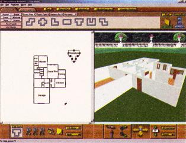
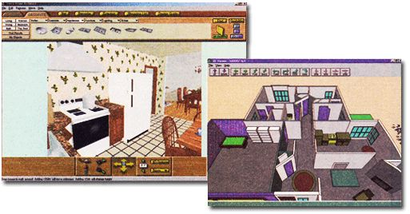
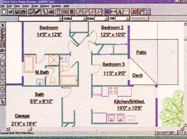
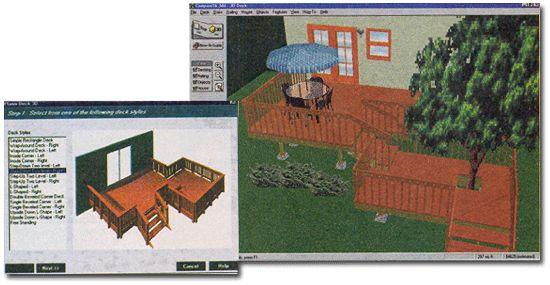

DO-IT YOURSELF
Home-design software has finally
graduated from gimmick to tool,
but does it deliver?
Several weeks ago, I was wandering the aisles of CompUSA, checking out the new computer gaming titles, when a curious thought struck me:
What are in all those other aisles? Feeling adventuresome, I headed over to the productivity software section, where I was immediately taken aback by the myriad of do-it-yourself programs available to the average consumer. I discovered software for preparing taxes and writing musical compositions, auto repair and diagnosing your own health ailments. It was interesting to think that the solutions to most everyday problems are, apparently, no more than a few mouse clicks away. One particular group of products that caught my immediate attention was the home-design packages. Why these products, you ask? Well, you should know that I am, by trade, an architect. Imagine my surprise as I perused one of the box covers and noticed drawings of detailed floor plans and interior room furniture layouts and 3-D renderings and backyard decks and landscaped yards and ...wow, what an amazing package! I must admit, however, that my initial reaction was one of skepticism. As an architect, I know how difficult and time-consuming it can be to design anything, even someone's residence. It requires thorough planning and meticulous attention to detail. Could these home-design packages stand up to the test? I decided to find out.
I started by gathering several of what seemed to be the most popular homedesign titles. This included Sierra's CompleteHome, Autodesk's Planix Home Designer 3D Deluxe, and Compton's Bob Vila's Home Design.
As I began my investigation, one of my first questions was: Just how user-friendly are these products? Would it take an architect to run them or could anybody use these programs? I work daily with a computer-aided design package known as AutoCAD, a high-end, accurate drafting and design tool that requires months to learn and years to master. To the professional, it is the perfect design tool. But in terms of both capability and complexity, it's probably a bit more program than the average consumer needs or is willing to learn. For most amateur designers, simplicity and ease of use are key.
That said, no program, even the do-it-yourself variety, is going to be a complete no-brainer. With this in mind, the first thing you should do before purchasing a package is determine what your exact design intentions are, as well as what you will expect the software to do. This is important because, while these products might appear alike, their individual approaches to design are somewhat different. Your ability to use these design tools successfully will, to some extent, depend on your computer expertise and patience at learning a new skill. Probably the best way to get information on the particulars of any one of these products is by searching out its Web page on the Internet. The vast amount of information available to you online will save you a lot of time, money, and frustration.
I decided to take each product through the typical design process, starting with the drawing of floor plans, then adding doors, windows, furniture, staircases, decks, and roofs, and finishing with a 3-D walk-around of the final design.
Right out of the gate, the product I found to be the easiest and most fun to use was Sierra's CompleteHome. The major difference between this product and the others has to do with what I would call its "drawing tool." It's the virtual implement you use to actually draw walls and rooms on the screen and, though every design program's got one, each handles it a bit differently. For example, when drawing walls in a product like AutoCAD, it is necessary to draw every single line-inside, outside, and each end of the wall are all drawn individually. With CompleteHome, on the other hand, you simply type in the desired room sizes when prompted and the program draws the room's walls for you. It will then place your various rooms on a layout toolbar so that you can drag and drop them onto the drawing field. If you want to change the size of any of these rooms, you can either click on that particular room and stretch it, or use the edit dialog box to pick individual walls, access their spec sheet, and type in new sizes. This method allows the user to make design decisions quickly and easily, without having to do a lot of work.
By comparison, Autodesk's Planix Home Designer and Compton's Bob Vila's Home Design both use a drawing tool not unlike AutoCAD's, but much more simplistic. In fact, Autodesk, the company that markets Planix Home Designer, is the same group that developed AutoCAD, so some of the commands, like snapping to different types of points (mid-point, endpoint, etc.) are similar.
Home Designer's drawing tool also allows you to draw curves, circles, and other complex shapes. This method of drawing is not necessarily all that difficult, but be prepared to spend a considerable amount of time familiarizing yourself and becoming comfortable with these slightly more advanced drawing tools. I strongly recommend that you plow through the tutorials for these products before attempting-your own designs.
Next it was time to see how these design tools deal with the tricky subject of holes in the walls. I was hoping it would be as easy as picking doors and windows from a menu and popping them onto a wall. I was stunned to discover that it was. In every case, all I needed to do was select the type of door or window that I wanted from a toolbar or menu. I would then be given a dialog box with all of the different parameters of that object. Once I was satisfied with my door or window, I simply picked the wall in which I wanted to place it and in it went. I could then adjust the position of the door or window by sliding it along the length of the wall. As nice and easy as this procedure is, it's important to point out that all of the windows and doors used in these programs start as generic symbols. Fortunately, Planix Home Designer and Bob Vila's Home Design provide you with the opportunity to change the size and shape of your windows and doors, as well as to choose the type: casement windows, double hung windows, French doors, etc. CompleteHome does all of that as well, but then takes it a step further by allowing you to change the materials and colors on the windows and doors through the spec sheet. It even provides you with "hotlinks" to connect to the Web sites of various window and door manufacturers.
Once I had finished the basic outline of the floor plan, I decided to add a second floor. With each product; the process for drawing multiple floors was similar to drawing the first, but how you got up to those new floors was handled differently. With both Bob Vila's Home Design and Planix Home Designer, the process couldn't be simpler. In both cases, when you pick your stair, you are given a dialog box that provides you with all of the parameters of that stair, including height, width, and tread and riser depths. By default, these numbers are based on an 8'-0" floor-to-floor height. If, however, you decide to make your floor-to-floor height 12'-0", then the program will automatically change the tread/riser depths and number of stairs to accommodate the new floor height. This assures you a correct stair height and length, enabling you to properly locate your stair within your floor plan.
CompleteHome is not quite as accommodating. You pick your staircase in much the same way that you pick doors and windows. Unfortunately, the spec sheet is also the same and does not provide you with the important tread and riser information. Even though you can change the overall size of the staircase, it will not accurately depict the correct depth of risers or number of stairs required for a greater floor-to-floor height. However, as with the doors and windows, you do have the option of changing materials and colors, as well as visiting stair manufacturers' Web sites.
The time came to add some furniture. If you're like me, you probably have very specific tastes when it comes to home furnishings. Well, I'm sorry to say that the standard .furniture selection menus provided with these products will probably not appease your tastes. Be that as it may, all three products come stocked with enough furniture types to get the job done. As before, adding furniture to your design is as easy as grabbing it from a toolbar and placing it in your floor plan. If you wish to edit any of these objects, both Bob Vila's Home Design and Planix Home Designer provide dialog boxes that allow you to change at least the size and color of your selected furniture. CompleteHome, once again, goes the extra step by giving you several materials to choose from, as well as online access to furniture manufacturer Web sites, plus Sierra's own Web page, where you can download even more objects. Keep in mind, however, that these objects are merely representational and will never match exactly what you ultimately purchase. Concern yourself mainly with getting the correct size and shape of an object to insure that it will fit within your designed floor plan.
Finally, it was time to cap off the house with a roof. Surprisingly, all three products handle this design task in a completely different manner. Sierra's is by far the easiest. It's another case of drag and drop: you simply pick a roof style from the menu and place it in the drawing field over the floor plan. By accessing the roof's spec sheet, you can then designate its size, pitch, and material. As a finishing touch, you can drag and drop chimneys and dormers onto your roof, and the program will automatically place them at the correct angle to the roof pitch.
Bob Vila's Home Design, on the other hand, requires that you draw the entire roof yourself. Once into the roof editor, you must draw roof panels, raise the roof peak, raise the roof to the top of your walls, and, in the case of a gable roof, edit your walls to fill in the holes on either end of the roof. It sounds more complicated than it is, but still it requires a good piece of your time, especially if you have a particularly complicated roof plan. The placement of dormers, chimneys, and skylights works much as it does in CompleteHome.
Planix Home Designer does not have a roof editor.
Once all the major components of your house have been designed, you'll probably want to do a little decorating. Fortunately, these programs give you the options of choosing carpet and paint colors, wallpaper patterns, and light fixtures. And, as an added bonus, Sierra's product also includes a clever electrical wiring program that'll help you get the lights turned on. The program provides tips and helpful hints to assist you in all of your electrical wiring needs. It will even figure out watts, amps, volts, wire sizes, and other crucial circuit information based on the appliances and fixtures you plan to use. The most impressive feature of this electrical package is the Circuit Simulator- a little program that will actually test a circuit diagram that you lay out to ensure it is properly wired.
Now that the interior of the house is finished, it's time to step outside and do a little exterior design work. Wouldn't it be nice to have a deck? Well, it just so happens that some of these home-design packages, especially the deluxe versions, actually provide their own deck-design software. Planix includes Deck 3D in its package, a fairly comprehensive design tool that allows you to pick a basic deck configuration and edit it to your personal liking or, for the more advanced user, design your deck from scratch. Throughout the entire process, you can access a help menu and watch informative video demonstrations of construction and design techniques. With the help of the "Deck Wizard," you can lay out your design relatively quickly, choosing everything from joist sizes, stairs, handrails, and pier spacing and depths.
Sierra's 3D Deck is not much different and, in fact, is somewhat easier to use. You start in much the same way as in Planix by picking an existing deck layout and revising it to fit your needs. When adding multiple levels, 3D Deck automatically chooses the correct stair size and length and warns you if the location you have chosen to place your stair has inadequate space. You can then complete your design by adding outdoor furniture and plants.
One of the unavoidable traps you inevitably fall into while using any of these home-design programs is getting carried away with your design. You end up having so much fun experimenting with different ideas and letting your imagination go wild that by the time you're finished, your house looks something akin to an English castle.
Fortunately, the software programmers anticipated this potential problem and have included handy cost and material estimators in their packages. Nothing like a harsh dose of reality to bring your wild ideas crashing back down to Earth. Both Planix Home Designer and CompleteHome provide excellent cost-estimating tools that keep an accurate inventory of materials and construction costs. These estimating tools calculate figures for both the house and deck designs. There is also the option of changing unit prices on any object, as well as adding one's own items to the list.
Of course, these programs cannot anticipate every single nut and bolt you will use to build your house, but they are a good way of generating at least a ballpark figure of the kind of overall expenses you can expect to incur.
Well, the house is finally finished, so what does it look like? Probably one of the best tools included in these home-design products is the 3-D viewer-and everybody's got one. These 3-D viewers allow you, the user, to take a virtual stroll through your finished design and get a pretty good idea of how things are going to look. Of course, the better the rendering option, the more realistic your 3-D view will be. Once again, of the three products, Sierra took top honors in this category. CompleteHome's 3D view was unique in that it was shown side by side with the 2-D drawing. As you add walls and furniture to the 2-D drawing, those same walls and pieces of furniture will automatically appear in the 3-D view. Then, with a simple click on the directional compass arrows below the image, you can tour your photo-realistic 3-D room layout.
All of the products give you the option of changing viewing angles, lighting conditions, and amounts of information shown on the screen, in order to better control the speed and clarity of the finished walk-through.
Of course, every product likes to include something a little bit different to separate it from the other guy. For example, some extra goodies you will find in Sierra's package include an extensive online Home Improvement Encyclopedia, a do-it-yourself book called Home Repair Essentials, and a magazine filled with hundreds of existing home designs. Bob Vila's Home Design adds a bonus CD to its package that is full of helpful video tips on all aspects of home design and is narrated by Bob Vila himself. The CD also contains over a thousand different professional home plans that you can use to get ideas or even modify for your own use. And finally, Planix Home Designer includes a landscape design tool that allows you to scan in a photo of your house and experiment with adding a plethora of different trees and plants to your yard, making for more dramatic surroundings.
Best of all, you can get any one of these design packages for a price of under $60.
Remember, also, that these are not the only home-design products out there. Since writing this article, I've come across several other design products, all of which appear to be similar to the ones mentioned above.
So, is all of this just so much smoke and mirrors or can you really build your dream house with the information you generate from these do-it-yourself home-design programs? Well, the answer to the latter part of this question is no, not really. In fact, not by a long shot.
If you remember, I stated early on that designing a house is a complicated and meticulous task and, unfortunately, these products only scratch the surface of the information needed to develop a complete set of design and construction documents. Yes, you can create a decent, well-dimensioned floor plan showing wall locations, stairs, doors, windows, and furniture-but it's only a start. To successfully build any home, you've also got to think about elevations, building and wall sections, mechanical equipment layouts, utility work, foundations, a basement (if one is to be included), floor and roof framing plans, and pages of construction details. There are also the issues of city code restrictions and zoning laws that need to be taken into consideration.
This is when the services of the architect come into play. As complete as the do-it-yourself home-design package might seem to be, you still need the professional to bring it all together.
Should you even bother spending the money for one of these programs? The answer to that question is a reserved yes. The best reason I can give for purchasing one of these products is that, simplistic though they are from a mechanical and physical standpoint, they give you the opportunity to take an active role in the design process of your own home. Consider the alternative: You hire an architect. You sit down with that architect for several hours to discuss all of your wonderful house ideas. The architect goes away for a week and attempts to turn your ideas into some sort of coherent and interesting design. In the meantime, you sit at home twiddling your thumbs. A week later, the architect returns and, guess what, the design is not quite what you had in mind. You rehash all your ideas and the architect goes away to try again. Eventually, the day comes when everyone is on the same page. As you can imagine, this process can take some time. But if you're using a decent home-design package, you have the opportunity to work on your own design in advance and throughout the process. You can try out all of your creative ideas using a design tool that is fun and relatively easy to use. The best part is that you are able to see instantaneous results of the design decisions that you make and are able to determine immediately which ideas work and which don't.
One of the more challenging tasks an architect faces in dealing with the average client is helping him or her to visualize and understand the translation of two-dimensional drawings into three-dimensional habitable space. But with the 3D viewer capabilities of the home-design packages, the two- and three-dimensional images are presented simultaneously, side by side, one building off of the other. This process enables you to understand and visualize the spaces you are creating.
Finally, using a tool like Sierra's CompleteHome, Autodesk's Planix Home Designer, Compton's Bob Vila's Home Design, or any of the other design packages, will help you to present your ideas to an architect in a clear, concise, and organized manner. This professional approach to your design presentation will go a long way toward creating a more equal and productive relationship between you and your architect, which will help to ensure the smooth and successful completion of your home.
|
JAMEY O'QUINN Sierra's combination 2-D and 3-D design screen. |
Left: A walking tour of your kitchen using Sierra's CompleteHome. Right: A hovering 3-D view, using Bob Vila's Home Design. |
 All three programs allow the user to conduct detailed floor plans. |
|
 An unexpected bonus in all these programs is the ability to design a deck, including cost estimates, for your home. Above is Sierra's 3D Deck; at left is Planix's Deck 3D. |
 |
 |